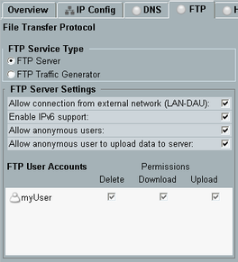

Configures the file transfer protocol (FTP) service for file transfer between the DUT and the DAU.
The service type "FTP Server" provides access to the samba share of the DAU via FTP. With anonymous access, you can download data from the samba share and have full access rights for the subdirectory ftp_anon (delete, download, upload). For registered users, the access rights are configurable per user.
See also "Using the System Drive of the DAU".

Selects the FTP service type.
"FTP Server" | An FTP server runs on the R&S CMW. You can configure it via the "FTP Server Settings". |
"FTP Traffic Generator" | The R&S CMW acts as a traffic generator which creates dummy data. You can download dummy data to the DUT or upload files from the DUT to the instrument. Note that uploaded files are not stored. For long-term tests, discarding the uploaded files avoids the risk of running out of data or filling up the internal disk drive of the DAU. |
Configure the FTP server via the checkboxes.
Remote command:Use the "... user account" softkeys to configure the FTP user accounts. For each user, you can specify the user credentials and access rights for data upload, download and deletion.
Remote command:Start or stop the service using the [ON | OFF] key. Alternatively, right-click the "FTP Service" softkey.
The softkey shows the current service state.
Remote command: